Adding Tapeless Backup Capability to MCS System
Purpose and Scope
- This document explains the procedures that support engineers must follow to add tapeless backup hard disk drives and backup software to the existing family of MCS servers.
- Older MCS servers are configured to perform system backups from their internal hard disk to a tape drive. These image backups are initiated by manual operator requests submitted through the MCS user interface.
- The tapeless backup scheme was designed because tape drives are becoming increasingly difficult to maintain and/or replace, and hard drives are relatively inexpensive and easily maintained. This new backup scheme will allow the hard disk backups to be scheduled and performed automatically (although it will still be necessary to manually verify backups on a weekly basis – consult FES-03-601 for information).
- The tapeless backup option functions by adding an additional dedicated backup disk to the VMS and Windows Servers. Backups for both systems are copied to the other system so that if one server is lost, it can be recovered from the other server. Scheduled tasks on the Windows server control the creation of both server backups. This occurs every Saturday morning as driven by scheduled tasks on the Windows server.
- To use this new backup scheme, it is necessary to install a disk drive into an existing server, transfer files, and then update several command files.
- This document applies to the following MCS server/operating system (OS) configurations:
- HP Integrity rx2660 (VMS OS)
- HP Alpha DS15 (VMS OS)
- HP Alpha DS20 (VMS OS)
- HP Alpha 1200 (VMS OS)
- HP Alpha 4000 (VMS OS)
- HP Proliant DL380, Gen 7 (Windows OS)
- HP Proliant DL380, Gen 6 (Windows OS)
- HP Proliant DL380, Gen 5 (Windows OS)
- HP Proliant DL380, Gen 4 (Windows OS)
- HP Proliant DL380, Gen 3 (Windows OS)
- HP Proliant DL380, Gen 2 (Windows OS)
Safety
 |
 |
Procedure
- Procedures for Installing Tapeless Backup
- These general steps are used to install and configure tapeless backup on an MCS system, regardless of the server model or operating system:
- Identify the server models.
- Determine the part number for the backup disk drive recommended for the particular server model.
- Purchase the hard disk drive.
- Purchase a “WinZip” license (Windows only – If required).
- Copy all required files to the MCS server.
- Install the disk drive in the MCS server.
- Configure the files.
- Run a backup.
- Use Backup Tools to verify the integrity of the backed-up file.
- Create Scheduled Tasks.
- After a week has passed, and periodically thereafter, use FES-03-601 to verify that the backup is occurring
- Installing Tapeless Backup on VMS-based Servers
-
Note:
Before starting this procedure, verify that there is a recent successful backup of the targeted server.
-
Note:
In the typed commands shown in this section, the # character is always used to denote a typed blank space.
-
- Copying the Backup Software to a VMS Server
- Log onto the Windows Server.
- Use the Reflections shortcut (MCSAdmin) to access the VMS Server command line.
- Log in with the username process.
- When you reach the “PC” prompt, type KING, and then press the Enter key. This will display the “$$” prompt.
- Type COM, and then press the Enter key.
- File transfer steps (text to be entered is in bold)
- Type FTP#IDEV99.NA.Space.INTRA
-
Note:
If this fails, use the IP address 10.126.128.65 instead
- Type KITFTP for the username
- Password is NEWVERSION
- CD#MCS.TAPELESS
- Type TYPE BINARY
- The following depends on the VMS Server’s hardware model
- For Integrity RX2660: GET#TAPELESS_2660.BCK
- For Alpha DS15: GET#TAPELESS_DS15.BCK
- For Alpha DS20: GET#TAPELESS_DS20.BCK
- For Alpha Server 1200/4000: GET#TAPELESS_40_12.BCK
- Type bye and press enter to exit FTP.
- When the “PC” prompt is displayed, type: @COPY_TAPELESS_FILES_TO_SERVER, and then press the Enter key.
- When prompted, enter the number corresponding to the targeted “VMS server type” and “IP address,” and then press the Enter key.
- A “successful transfer” message will be displayed when the backup software files have been successfully transferred to the targeted VMS server, as show in REF _Ref417306284 \h \* MERGEFORMAT Figure 1.
- Proceed to the next section depending on the hardware model of the VMS Server.
These steps assume that you are already logged onto the VMS server following
steps 3.3.A-E above
- For the Integrity RX2660 – 3.4
- For the Alpha DS15 – 3.5
- For the Alpha DS20 – 3.6
- For the Alpha Server 1200/4000 – 3.7
Figure 3. Figure 1: Successful Transfer Message 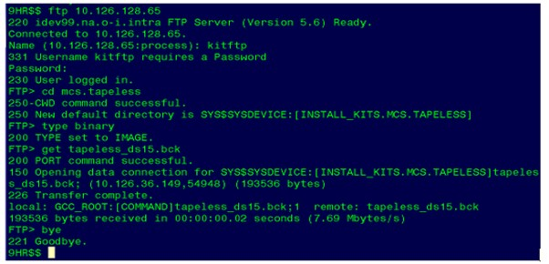
- If difficulties are encountered in copying this file, contact your Process Control Country Group Regional Network Leader.
- HP Integrity rx2660 VMS Server
- As supplied, the MCS Integrity rx2660 VMS server contains two hard disk drives which are configured to operate in tandem as a RAID1 (Redundant Array of Independent Disks) system drive. These two disk drives are physically installed in slots 7 and 8. This system is configured to perform image backups from the RAID1disk to a tape drive.
- Follow these specific steps to add hard disk drive backup to an Integrity rx2600 server.
- Install an HP Integrity 146GB Disk Drive (Space part number “SEP-3-177”) in Slot 6. NOTE: there must be no empty slots between installed drives.
- Type DIR#TAPELESS*, and then press the Enter key. The file named “Tapeless_2660.bck” should be listed, along with its size and date.
- Type BACKUP##TAPELESS_2660.BCK/SAV###*/BY_OWN=PAREN, and then press the Enter key, which will “unpack” the procedure file.
- Type @CONFIG_TAPELESS_BACKUP_2660, and then press the Enter key. This will start the execution of the main procedure, which will take several minutes to complete.
- Type SHOW#DEV#D, and then press the Enter key. Confirm that “dka600:” is displayed on the list (indicating that step 7 was successful) before proceeding.
- Type MOUN/OVER=ID#DKA600: and press the Enter key. This will mount the newly installed drive. The procedure will be successful when a message is displayed confirming that “xxxBACKUP” has been mounted.
- Type DISM#DKA600:, and then press the Enter key. This will dismount “xxxBACKUP.”
- Use a text editor to add a definition to the “SYSINI:LOGICAL_INIT.COM” file.
Note:
This editing must be performed very carefully because any incorrect changes will prevent the MCS server from starting the next time it is turned on or restarted.
- Type SET#DEF#SYSINI, and then press the Enter key.
- Type EVE#LOGICAL_INIT.COM, and then press the Enter key.
- Use the Down Arrow key to move the cursor down until you see the lines
displayed in REF _Ref417306251 \h \* MERGEFORMAT Figure 2.
Figure 4. Figure 2: Logical_Init.com file (opened in Text Editor) 
- Position the cursor at the very beginning of the blank line:
- Type $
- Press the TAB key
- Type DEFINE/SYSTEM
- Press the TAB key
- Type MCS_BACKUP_DISK#DKA600:
- Press the Enter key
- Confirm that the line is typed exactly as shown to the left of the arrow in
REF _Ref417306240 \h \* MERGEFORMAT Figure 4 before proceeding
Figure 5. Figure 3: Definition added to the Logical_Init.com file 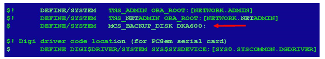
- The changes made to the file must now either be saved or discarded.
- To save the changes:
- Press the DO key (or, if using Reflection, press the key that is mapped to DO), which will display a “Command:” prompt at the bottom left-hand corner of the screen.
- Type EXIT.
- Press the Enter key.
- If you made a mistake and need to discard the changes:
- Press the DO key (or, if using Reflection, press the key that is mapped to DO), which will display a “Command:” prompt at the bottom left-hand corner of the screen.
- Type Quit.
- Press the Enter key.
- Go back to step 8 to re-edit the file.
- Type LO (for log out) and then press the Enter key.
- Use the MCS User Interface screen to start a VMS/Integrity backup. Check for successful completion. Reference the MCSII Operators Manual (PCS-0372) for more details.
- MCS Integrity server backups must be manually requested by an operator unless the associated Windows server has also been configured for tapeless backup. If configured, the Windows server will automatically request VMS backups according to the recommended schedule. Operators should periodically confirm that backups are completing successfully.
- HP Alpha DS15 Server
- As supplied, the MCS Alpha DS15 VMS server uses a single disk drive to serve as its “system” drive. This server is configured to perform image backups from this system disk drive to an internal tape drive.
- Follow these steps to add tapeless backup capability to this server.
-
Note:
In the typed commands shown in this section, the # character is always used to denote a typed blank space.
- Install an HP 72GB 10K Disk Drive (HP Part “DS-RZ3GA-WA” or its equivalent) in the spare internal slot. This will require powering the system down. Reference the MCSII Operators Manual as required.
- Log in to the targeted MCS Alpha server with the Username Process and the appropriate password.
- At the “PC” prompt, type KING, and the press the Enter key. This will display a “$$” prompt.
- Type COM and press the Enter key.
- Type BACKUP##TAPELESS_DS15.BCK/SAV###*/BY_OWN=PAREN, and press the Enter key, which will “unpack” the procedure file.
- Type @CONFIG_TAPELESS_BACKUP_DS15 and press the Enter key. This will start the execution of the main procedure, which will take several minutes to complete.
- Type SHOW#DEV#D, and then press the Enter key. Confirm that dka100: is displayed in the list before proceeding.
- Type MOUN/OVER=ID#DKA100:, and press the Enter key. This will mount the newly installed drive. The procedure will be successful when a message is displayed confirming that “xxxBACKUP” has been mounted.
- Type DISM#DKA100: and press the Enter key. This will dismount “xxxBACKUP.”
- Use a text editor to add a definition to the “SYSINI:LOGICAL_INIT.COM” file.Note:
This editing must be performed very carefully because any incorrect changes will prevent the MCS server from starting the next time it is turned on or restarted.
- Type SET#DEF#SYSINI, and then press the Enter key.
- Type EVE#LOGICAL_INIT.COM, and then press the Enter key.
- The text at the top of the file will be displayed. Use the Down Arrow key to move
the cursor down until you see the lines displayed in REF _Ref417306214 \h \*
MERGEFORMAT Figure 4.
Figure 6. Figure 4: Logical_Init.com file (opened in Text Editor) 
- Position the cursor at the very beginning of the blank line:
- Type $
- Press the TAB key
- Type DEFINE/SYSTEM
- Press the TAB key
- Type MCS_BACKUP_DISK#DKA100:
- Press the Enter key
- Confirm that the line is typed exactly as shown to the left of the arrow in REF
_Ref417306202 \h \* MERGEFORMAT Figure 5 before proceeding
Figure 7. Figure 5: Definition added to the Logical_Init.com file 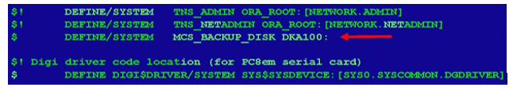
- The changes made to the file must now either be saved or discarded.
- To save the changes:
- Press the DO key (or, if using Reflection, press the key that is mapped to DO), which will display a “Command:” prompt at the bottom left-hand corner of the screen.
- Type EXIT.
- Press the Enter key.
- If you made a mistake and need to discard the changes:
- Press the DO key (or, if using Reflection, press the key that is mapped to DO), which will display a “Command:” prompt at the bottom left-hand corner of the screen.
- Type Quit.
- Press the Enter key.
- Go back to Step 10 to re-edit the file.
- Type LO (for log out) and then press the Enter key.
- Navigate to the MCS user interface screen and start a VMS/Alpha backup.
- Check for successful completion with the MCS Backup Tools. Reference the MCSII Operators Manual (PCS-0372) for more details. If issues are noted, contact MCS Support.
-
Note:
MCS Alpha server backups must be manually requested by an operator unless an associated Windows server has also been configured for tapeless backup. If the Windows server has been configured for tapeless backup, the Windows server will automatically request VMS backups according to the recommended schedule. Operators should periodically confirm that backups are completing successfully.
- HP Alpha DS20 Server
- As supplied, the MCS Alpha DS20 VMS server uses a single disk drive installed in slot 1 to serve as its “system” drive. This system is configured to perform image backups from the system disk to an attached tape drive.
- To implement tapeless backup, a backup disk must be installed in slot 4 of this server.
-
Note:
Some systems may already have a spare disk installed in slot 2. If this is the case, do not move it. It is acceptable to have empty slots between drives on this server. The backup drive typically should have a minimum capacity of at least 72GB.
- Follow these steps to add tapeless backup capability to this server.
-
Note:
In the typed commands shown in this section, the # character is always used to denote a typed blank space.
- Install an HP 72GB 10K Disk Drive (HP Part “3R-A6419-AA”) in internal slot 4. Empty slots are permitted between drives. Some systems may have a spare disk already installed in slot 2 -- do not move any existing spare disk drives.
- Type BACKUP##TAPELESS_DS20.BCK/SAV###*/BY_OWN=PAREN, and press the Enter key, which will “unpack” the procedure file.
- Type @CONFIG_TAPELESS_BACKUP_DS20, and then press the Enter key. This will start the execution of the main procedure, which will take several minutes to complete.
- Type SHOW#DEV#D, and press the Enter key. Confirm that dka300: is displayed in the list before proceeding.
- Type MOUN/OVER=ID DKA300:, and press the Enter key. This will mount the newly installed drive. The procedure will be successful when a message is displayed confirming that “xxxBACKUP” has been mounted
- Type DISM#DKA300: and press the Enter key. This will dismount xxxBACKUP.
- Use a text editor to add a definition to the “SYSINI:LOGICAL_INIT.COM”
file. Note:
This editing must be performed very carefully because any incorrect changes will prevent the MCS server from starting the next time it is turned on or restarted.
- Type SET#DEF#SYSINI, and then press the Enter key.
- Type EVE#LOGICAL_INIT.COM, and then press the Enter key.
- The text at the top of the file will be displayed. Use the Down
Arrow key to move the cursor down until you see the lines displayed
in Figure 6.
Figure 8. Figure 6: Logical_Init.com file (opened in Text Editor) 
- Position the cursor at the very beginning of the blank line:
- Type $
- Press the TAB key
- Type DEFINE/SYSTEM
- Press the TAB key
- Type MCS_BACKUP_DISK#DKA300:
- Press the Enter key
- Confirm that the line is typed exactly as shown to the left of the
arrow in Figure 7 before
proceeding
Figure 9. Figure 7: Definition added to the Logical_Init.com file 
-
- The changes made to the file must now either be saved or discarded.
- To save the changes:
- Press the DO key (or, if using Reflection, press the key that is mapped to DO), which will display a “Command:” prompt at the bottom left-hand corner of the screen.
- Type EXIT.
- Press the Enter key.
- If you made a mistake and need to discard the changes:
- Press the DO key (or, if using Reflection, press the key that is mapped to DO), which will display a “Command:” prompt at the bottom left-hand corner of the screen.
- Type Quit.
- Press the Enter key.
- Go back to step 7 to re-edit the file.
- To save the changes:
- Type LO (for log out) and then press the Enter key.
- Use the MCS User Interface screen to start a VMS/Alpha backup. Check for successful completion. Reference the MCSII Operators Manual (PCS-0372) for more details. If issues are encountered, contact the MCS Support.
- MCS Alpha server backups must be manually requested by an operator unless the associated Windows server has also been configured for tapeless backup. If configured, the Windows server will automatically request VMS backups according to the recommended schedule. Operators should periodically confirm that backups are completing successfully.
- HP Alpha 1200 and 4000 Servers
- As supplied, the MCS Alpha 4000 and 1200 VMS servers both have single disk drives installed in slot 1 which serve as their “system” drives. These servers are configured to perform image backups from their system disks to an internal tape drive.
- Follow these steps to add tapeless backup capability to these two servers.
-
Note:
In the typed commands shown in this section, the # character is always used to denote a typed blank space.
- Install a backup disk in a spare slot. REF _Ref413670586 \h \*
MERGEFORMAT Required/Suggested Equipment Figure 1: Suggested Hard Drives for
Tapeless Backup provides a listing of the suggested disk for each
server.
- For MCS Alpha 1200 servers, install the backup disk in slot number 4.
- For MCS Alpha 4000 servers, also install the backup disk in slot number 4, but do not count the slot with the power supply.
-
Note:
Some systems may already have a spare disk installed in slot 2. If this is the case, do not move it. Install the backup drive in slot 4. It is allowable to have empty slots between installed drives.
- The backup drive typically has a capacity of at least 9GB for the 4000, and 18GB for the 1200. When installing a drive, first check carefully to confirm that the connector is aligned correctly before attempting to seat the drive.
- Type BACKUP##TAPELESS_40_12.BCK/SAV###*/BY_OWN=PAREN, and then press the Enter key, which will “unpack” the procedure file.
- Type $$ @CONFIG_TAPELESS_BACKUP_40_12, and then press the Enter key. This will start the execution of the main procedure, which will take several minutes to complete.
- Type SHOW#DEV#D and then press the Enter key. Confirm that “dkb300:” is displayed in the list before proceeding.
- Type MOUN/OVER=ID#DKB300: and then press the Enter key. This will mount the newly installed drive. The procedure will be successful when a message is displayed confirming that “xxxBACKUP” has been mounted.
- Type DISM#DKB300:, and then press the Enter key. This will dismount “xxxBACKUP.”
- Use a text editor to add a definition to the “SYSINI:LOGICAL_INIT.COM”
file. Note:
This editing must be performed very carefully because any incorrect changes will prevent the MCS server from booting up successfully the next time it is turned on or restarted:
- Type SET#DEF#SYSINI, and then press the Enter key.
- Type EVE#LOGICAL_INIT.COM, and then press the Enter key.
- The text at the top of the file will be displayed. Use the Down
Arrow key to move the cursor down until the lines shown in Figure
8 are displayed.
Figure 10. Figure 8: Logical_Init.com file (opened in Text Editor) 
- Position the cursor at the very beginning of the blank line:
- Type $
- Press the TAB key
- Type DEFINE/SYSTEM
- Press the TAB key
- Type MCS_BACKUP_DISK#DKB300:
- Press the Enter key
- Confirm that the line is typed exactly as shown to the left
of the arrow in Figure 9 before proceeding
Figure 11. Figure 9: Definition added to the Logical_Init.com file 
- The changes made to the file must now either be saved or discarded.
- To save the changes:
- Press the DO key (or if using Reflection, press the key that is mapped to DO), which will display a “Command:” prompt in the bottom left-hand corner of the screen.
- Type EXIT.
- Press the Enter key.
- To discard the changes:
- Press the DO key (or if using Reflection, press the key that is mapped to DO), which will display a “Command:” prompt at the bottom left-hand corner of the screen.
- Type QUIT.
- Press the Enter key.
- Go back to Step 7 to re-edit the file.
- To save the changes:
- Type LO (for log out) and then press the Enter key.
- Use the MCS user interface screen to start a VMS/Alpha backup session. Check for successful completion. Reference the MCSII Operators Manual (PCS-0372) for more details. If issues are encountered, contact MCS Support.
-
Note:
MCS Alpha server backups must be manually requested by an operator unless the associated Windows server has also been configured for tapeless backup. If configured, the Windows server will automatically request VMS backups according to the recommended schedule. Operators should periodically confirm that backups are completing successfully.
- Install a backup disk in a spare slot. REF _Ref413670586 \h \*
MERGEFORMAT Required/Suggested Equipment Figure 1: Suggested Hard Drives for
Tapeless Backup provides a listing of the suggested disk for each
server.
- Installing Tapeless Backup on Windows Based Servers
-
Note:
Before starting this procedure, verify that there is a recent successful backup of the targeted server.
- Copying the Backup Software to a Windows Server
- Log onto the MCS Windows Server as Administrator.
- The backup files are located on the Space Manufacturing Software Site, in the “Process Control\Tapeless” directory. Reference FES-03-500 for connecting the MCS server to the Manufacturing Software Site.
- Copy MCS3 Backup Files.zip to the desktop.
- When the save operation completes, right-click the “MCS Backup
Files.zip” file displayed on the MCSII_Server share, and
then select WinZip followed by Extract To (see REF _Ref417306614 \h \*
MERGEFORMAT Figure 10).
Figure 12. Figure 10: Extract All… Drop Down 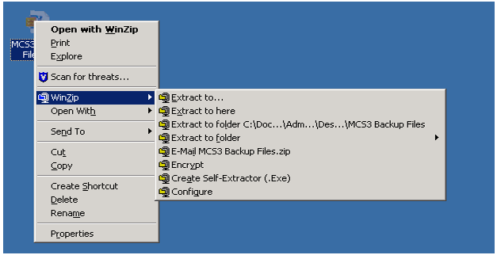
- You will be prompted to “Select a Destination and Extract Files,” (see REF
_Ref417306805 \h \* MERGEFORMAT Figure 11). Navigate to D:\MSCII_Server
as shown. Click on the Extract button start the
extraction process to unzip all of the MCS backup files into the MCS3
Backup files folder.
Figure 13. Figure 11: Extraction Folder Selection 
-
- When the process is successful, the new directory will be created, as shown in REF
_Ref417308145 \h \* MERGEFORMAT Figure 12.
Figure 14. Figure 12: Successfully Created MCS3 Backup Folder 
- WinZip Version Confirmation
- The file compression/decompression software “WinZip” is used to decompress the server backup files after they have been copied to the server. Also, it is needed to compress the MCS Backup file for storage and/or transfer. Because early versions of “WinZip” have limitations on the size of the files they can compress and decompress, it is necessary to confirm that the version installed on the targeted server is version 9.0 (or greater) before attempting this procedure.
- To check the version, select Start/Programs as
shown in REF _Ref417308330 \h \* MERGEFORMAT Figure 13. If the version is not shown
on the drop-down menu listing, then open “WinZip,” select Help, and then
select About WinZip.
Figure 15. Figure 13: WinZip Version Listing 
- If the “WinZip” version is 9.0 or higher, then you can proceed directly to Section C, WinZip Command-Line Add-On.
- Updating WinZip to Version 11.0
- If the “WinZip” version is 8.0 (or less), it will be necessary to
upgrade the “WinZip” program on the targeted server to version 11.0
before proceeding. Because “WinZip” software is a licensed product, it is
necessary to purchase a single user license/copy for the most current
version before updating the version on the server. Note:
It is easiest to purchase the required “WinZip” license along with the hard disk drive. Once a license has been purchased, the actual program file can be copied from the Space collaboration website, using the following steps:
- After a current “WinZip” Version license has been acquired, the software
can be downloaded to the targeted MCS server. (Note:
MCSII will use WinZip version 11.0, regardless of the current available version.)
- The “WinZip” installation folder (WinZip11Pro.zip) can be copied from
the using the same procedures described Section 1.2.1, Copying the Backup
Software to a Windows Server.
- Once the “WinZip” software has been copied, use Add/Remove Programs to uninstall WinZip V8 (Figure 14).
- Use Add/Remove Programs to install WinZip V11. Browse to D:\MCSII_Server\WinZip11Pro.
-
Note:
Be sure to direct the installation to the “D:\Program Files” drive and folder, and not to the default C:\ drive.
Figure 16. Figure 14: WinZip Removal Screen 
- If the “WinZip” version is 8.0 (or less), it will be necessary to
upgrade the “WinZip” program on the targeted server to version 11.0
before proceeding. Because “WinZip” software is a licensed product, it is
necessary to purchase a single user license/copy for the most current
version before updating the version on the server.
- WinZip Command-Line Add-On
- To operate properly, servers using “WinZip” versions greater than 8.0
must have an add-on command line copied to their D:\Program Files\WinZip
folder. To do this:
- Open Windows Explorer and navigate to D:\MCSII_Server\MCS3 Backup
Files\ WinZipAddons (and the Version folder that corresponds to the
version of “WinZip” that is installed on the targeted server).
Note:
These add-on files were copied to the server along with the other tapeless backup files.
- Open another Windows Explorer window and navigate to D:\Program
Files\WinZip. Copy the files from the correct version folder and
paste them in the D:\Program Files\WinZip folder. Available
versions are shown in Figure 15.
Figure 17. Figure 15: WinZip Add-On Files Available 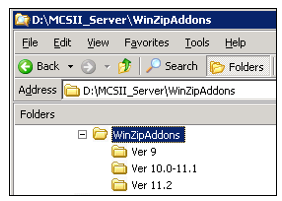
- Open Windows Explorer and navigate to D:\MCSII_Server\MCS3 Backup
Files\ WinZipAddons (and the Version folder that corresponds to the
version of “WinZip” that is installed on the targeted server).
- To operate properly, servers using “WinZip” versions greater than 8.0
must have an add-on command line copied to their D:\Program Files\WinZip
folder. To do this:
- Physically Installing Backup Disk Drives in Windows Servers
- Configuring the Disk Array for Windows G4, G5, G6 and G7 Servers
- The disk drives used in these servers are all “hot-pluggable,” so
it is not necessary to power down a server when installing a disk
drive. Note:
Figure 1 provides a listing of suggested disks for each server.Hard drive installation directions can typically be found on the drive manufacturer’s web site.
- To configure a Windows G4, G5, G6, or G7 server, follow these steps:
- Physically install the hard disk drive into Drive Bay 3 of the Windows Server, and then if the server is not already running, turn it on and let it boot-up completely.
- Start the Array Configuration Utility (ACU) by using Windows
Explorer to browse to the HP Array Configuration Utility listing
(see Figure 16).
Figure 18. Figure 16: HP Array Configuration Utility Startup for G4, G5, G6, and G7 Servers
- Double-click on HP Array Configuration Utility. This will display the HP Array Configuration Utility Available Device screen (see Figure 17).
- Select the device by clicking as indicated.
Figure 19. Figure 17: HP Array Configuration Utility Smart Array Selection Screen 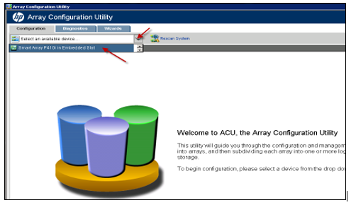
- Click on the Down Arrow key and choose
Physical View to display the available devices. Then, double-click
on Smart Array P410i in Embedded Slot to
display the array. Click once on Unassigned Drives
(1) which will be listed as an “Unassigned Drive.”
This will display the HP Array Configuration Utility Unassigned
Drives screen, (see Figure 18).
Figure 20. Figure 18: HP Array Configuration Utility Unassigned Drives Screen 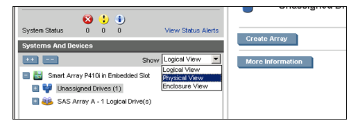
- Click on the Unassigned Drive to highlight
it, and then click on the Create Array
button (see Figure 19).
This will start the array configuration process and display the
Create Array Unassigned drives screen, as shown in Figure 20.
Figure 21. Figure 19: HP Array Configuration Utility Unassigned Drives Selection Screen 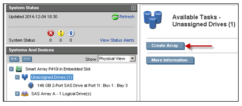
- When the Physical Drive Selection screen is displayed (see Figure
20), click on the
newly installed drive (in this case Bay 3) to highlight it, and
then click on the OK button to start the
configuration process.
Figure 22. Figure 20: Physical Drive Selection Screen 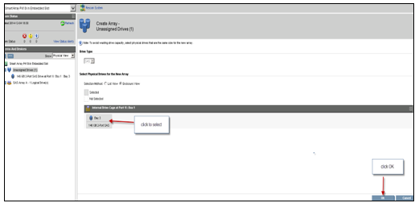 - When the Create Logical Drive screen is displayed (see
Figure 21), highlight
the targeted drive and click on the Create Logical
Drive button. This will initiate the drive creation
process and display a drive parameter confirmation screen (see
Figure 22).
Figure 23. Figure 21: Create Logical Drive Selection Screen 
Figure 24. Figure 22: Drive Parameter Confirmation Screen 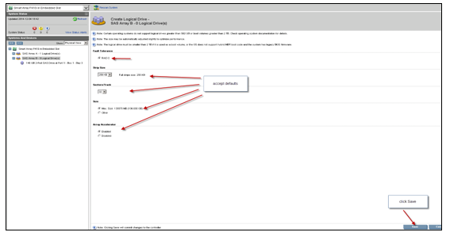
- Accept the default values displayed on this screen by clicking on
the Save button. The system will complete
the drive creation process and display the system status screen,
showing the status of the newly configured drive (see Figure 23).
Figure 25. Figure 23: System Status Screen 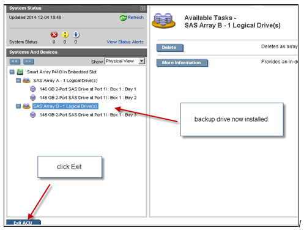
- Pressing the Exit ACU button will complete the configuration process and exit you from the array configuration utility program.
- The disk drives used in these servers are all “hot-pluggable,” so
it is not necessary to power down a server when installing a disk
drive.
- Configuring the Disk Array for Windows G4, G5, G6 and G7 Servers
- Configuring a Disk Array for a Windows G3 Server
- The disk drives used in this server are all “hot-pluggable,” so it is not necessary to power down the server when installing a disk drive. REF _Ref413670586 \h \* MERGEFORMAT Required/Suggested Equipment Figure 1: Suggested Hard Drives for Tapeless Backup provides a listing of suggested disks for each server. Hard drive installation directions can typically be found on the drive manufacturer’s web site.
-
Note:
The screens used during the configuration of G3 disk arrays are very similar to those used when configuring G4, G5, G6 and G7 arrays. However, some minor differences do exist. See Section 1.2.5.1, Configuring the Disk Array for Windows G4, G5, G6 and G7 Servers for representative examples of the screens that will be encountered during the configuration of G3 arrays.
- To configure a Windows G3 server, follow these steps.
- Physically install the hard disk drive into Drive Bay 2 of the MCS
G3 Windows Server, and then if the server is not already running,
turn it on and let it boot-up completely. Note:
Figure 1 provides a listing of suggested disks for each server. Hard drive installation directions can typically be found on the drive manufacturer’s web site.
- Click on Start Programs.
- Click on Compaq System Tools.
- Click on HP Array Configuration Utility.
- Click (again) on HP Array Configuration
Utility (see Figure 24).
Figure 26. Figure 24: HP Array Configuration Utility Startup Selection, G3 Server 
- Select the Device (the newly installed hard drive).
- Select Physical View. The newly installed drive will be displayed as the “Unassigned Drive.” Click on the “Unassigned Drive” line to highlight it.
- Select Create Array (accept all the default values).
- Click on Save.
- Click on Exit, which will shut down the ACU.
- Physically install the hard disk drive into Drive Bay 2 of the MCS
G3 Windows Server, and then if the server is not already running,
turn it on and let it boot-up completely.
- Configuring a Disk Array for a Windows G2 Server
-
Note:
The screens used during the configuration of a G2 disk array are very similar to those used when configuring G4, G5, G6 and G7 arrays. However, some minor differences do exist. See Section 1.2.5.1, Configuring the Disk Array for Windows G4, G5, G6 and G7 Servers for representative examples of the screens that will be encountered during the configuration of G2 arrays.
- The disk drives used in this server are all “hot-pluggable,” so it is not necessary to power down the server when installing a disk drive.
- To configure a Windows G2 Server, follow these steps:
- Physically install the hard disk drive into Drive Bay 2 of the MCS G2 Windows Server, and then if the server is not already running, turn it on and let it boot-up completely. Required/Suggested Equipment Figure 1: Suggested Hard Drives for Tapeless Backup provides a listing of suggested disks for each server. Hard drive installation directions can typically be found on the drive manufacturer’s web site.
- Start the Array Configuration Utility (ACU) by navigating to the Start/Programs/Compaq System Tools/HP Array Configuration Utility/ HP Array Configuration Utility.
- Click on Start Programs.
- Click on Compaq System Tools.
- Click on HP Array Configuration Utility
(see Figure 25).
Figure 27. Figure 25: HP Array Configuration Utility Startup, G2 Server 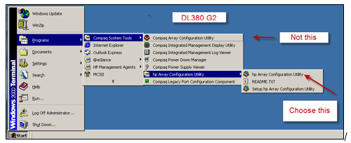
- Select the Device (the newly installed hard drive).
- Select Physical View. The newly installed drive will be displayed as the Unassigned Drive. Click on the Unassigned Drive line to highlight it.
- Select Create Array (choose all the default values).
- Click on Save.
- Click on Exit, which will shut down the ACU.
-
- Initializing Windows Backup Disk Drives
- Right-click on the My Computer icon to highlight it and display a drop-down menu.
- Select Manage. This will display the Computer Management screen, as shown in Figure 31.
- Select Disk Management.
- Right-click on the Disk1 tab to highlight the disk listing and display a drop-down menu.
- Select Initialize Disk (see REF _Ref417309637 \h
\* MERGEFORMAT Figure 26).
When the initialization process is complete, the “Disk Management”
screen will be redisplayed, as shown in REF _Ref417309668 \h \*
MERGEFORMAT Figure 27,
Figure 28. Figure 26: Initialize Disk Selection 
- Right-click on the name of the initialized disk (to highlight it and
display a drop-down menu) and select New
Partition (see REF _Ref417309668 \h \* MERGEFORMAT Figure
27).
Figure 29. Figure 27: New Partition Selection 
-
Note:
Make sure the initialized disk is listed as “Primary,” see REF _Ref417309716 \h \* MERGEFORMAT Figure 28.
Figure 30. Figure 28: Select Partition Type Screen 
- Click on the Next button. You will be prompted to
“Specify Partition Size,” (see REF _Ref417309755 \h \*
MERGEFORMAT Figure 29).
Figure 31. Figure 29: Default Partition Parameters Selection Screen 
- Accept the default values by clicking the Next
button. This will display a prompt to “Assign a Drive Letter or
Path,” see REF _Ref417311229 \h \* MERGEFORMAT Figure 30.
Figure 32. Figure 30: Assign a Drive Letter Screen 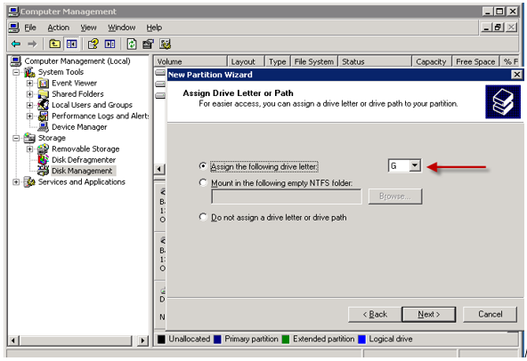
- Select G: as the drive letter and click on the
Next button, which will display the “Format
Partition” selection screen (see REF _Ref417370536 \h \*
MERGEFORMAT Figure 31).
Figure 33. Figure 31: Select Defaults and Format Partition Screen 
- Click on the Next button to use the defaults to start formatting the partition.
- When the partition formatting process is completed, the “Completing
the New Partition Wizard Screen will be displayed (with the
currently selected settings), as shown in REF _Ref417370584 \h \*
MERGEFORMAT Figure 32. To
accept these settings and complete the partitioning operation, click on
the Finish button.
Figure 34. Figure 32: Completing the New Partition Wizard Screen 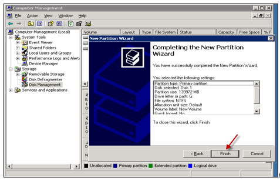
- When the partitioning process is complete, the “Disk Management”
screen will be redisplayed, as shown in REF _Ref417370606 \h \*
MERGEFORMAT Figure 33.
Figure 35. Figure 33: Disk Management Screen 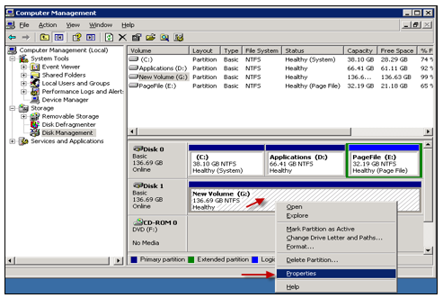
- Right-click on the initialized disk once to highlight it and display the drop-down menu, and then select Properties.
- Click on the General Tab to display the general
volume information, and then type the new volume name Backups, (see REF
_Ref417370631 \h \* MERGEFORMAT Figure 34).
Figure 36. Figure 34: General Properties Tab 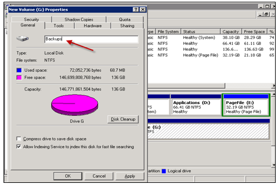 - Click on the Sharing tab to display the sharing
information screen (see REF _Ref417370659 \h \* MERGEFORMAT Figure 35).
Figure 37. Figure 35: New Share Button on Sharing Tab 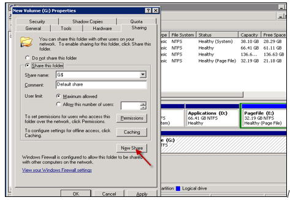
- On the Sharing Tab, click the New
Share button. This will display the “New Share”
naming prompt, (see REF _Ref417370742 \h \* MERGEFORMAT Figure 36).
Figure 38. Figure 36: New Share Naming Prompt Screen 
- When prompted to provide a “Share name,” Type G,
and then click on the OK button. This will update
the new share information and return you to the “Sharing” tab (see
REF _Ref417370782 \h \* MERGEFORMAT Figure 37).
Figure 39. Figure 37: Sharing Tab 
- Clicking the Apply button will create the new
share and return you to the Disk Management Screen where information will
be displayed for the targeted disk drive (see REF _Ref417370819 \h \*
MERGEFORMAT Figure 38).
Figure 40. Figure 38: Disk Management Screen 
-
Note:
The backup drive should now be configured as RAID 0 (zero), Simple, NTFS, Primary Partition, defined as G:, named Backups, and Shared.
- Copying the Backups Folder and Files
- The Backups file folder downloaded earlier and extracted to the D:\ drive (D:\MCSII_Server\MCS3 Backup Files\Backups -- see REF _Ref417370868 \h \* MERGEFORMAT Figure 39) must now be copied to the new G: drive.
- Open Windows Explorer.
- Highlight D:\ MCSII_Server\MCS3 Backup Files\Backups (see REF
_Ref417370868 \h \* MERGEFORMAT Figure 39).
Figure 41. Figure 39: Copy Backups Folder from this Location 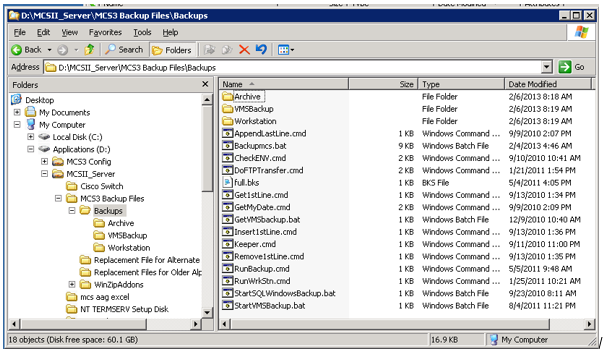
- Right-click, and then select Copy.
- Navigate to G:\
- Right-click, and then select Paste. The Backups
folder and its contents should be copied to the G: drive (see REF
_Ref417370901 \h \* MERGEFORMAT Figure 40).
Figure 42. Figure 40: Paste Backups Folder to this Location 
- Older installations using SQL Server 2000 will require the copying of alternate backup-related files to handle communications with older versions of the VMS operating system.
- Verify the SQL version of a server by inspecting the icon on the Admin desktop. SQL Server 2005 icons are titled “SQL Server Management Studio.” SQL Server 2000 installation icons are titled “SQL2K Enterprise Manager.” Step b. is only done for SQL Server 2000 systems.
- If the system operates with SQL Server 2000, it will be necessary to copy the separate files located in the folder named “D:\MCSII_Server\MCS3 Backup Files\Replacement Files for Older Alpha Systems” to the “G:\Backups” folder (replacing the files in that folder which have the same names).
- How to Create Scheduled Tasks
-
Note:
Before creating tasks, verify that there is a recent successful backup of the server.
- Two scheduled tasks (both running as Administrator) must be set up on the server to run the backup routine automatically:
- Click on Programs.
- Click on Accessories.
- Click on System Tools.
- Right-click on Scheduled Tasks (see REF
_Ref417370964 \h \* MERGEFORMAT Figure 41), and then drag the cursor to
an open spot on the desktop. When you release the right
mouse button, you will be prompted to
“Create a Shortcut.”
Figure 43. Figure 41: Scheduled Tasks 
- Select Create Shortcut Here.
- Double-click the icon you just created to open Scheduled Tasks.
- Select Add Scheduled Task to open the Wizard.
- Browse to the G:\ drive and select G:\Backups\Runbackup.cmd. Note:
The task name should default to the name of the CMD file.
- Confirm that the settings on the Task Tab match those shown in REF
_Ref417371028 \h \* MERGEFORMAT Figure 42
Figure 44. Figure 42: Run Backup Task Screen 
- Set the schedule, as shown in REF _Ref417371063 \h \* MERGEFORMAT Figure
43.
Figure 45. Figure 43: Run Backup Schedule Screen 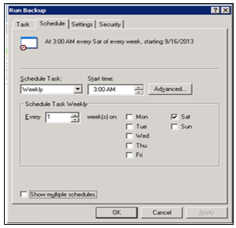
- The tasks must run under the Administrator account. When prompted, supply the username MCSxxS0\Administrator, and then enter the Administrator Password.
- Repeat the process to schedule the other task.
- Select Add Scheduled Task to open the Wizard.
- Browse to the G:\ drive and select G:\Backups\StartVMSbackup.bat. Note:
The task name should default to the name of the “.bat file.”
- Confirm that the settings on the Task Tab match those shown in REF
_Ref417371101 \h \* MERGEFORMAT Figure 44.
Figure 46. Figure 44: Start VMS Backup Task Screen 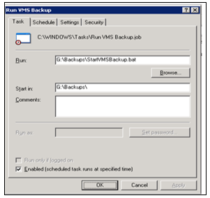
- Set the schedule as shown in REF _Ref417371135 \h \* MERGEFORMAT Figure
45.
Figure 47. Figure 45: Start VMS Backup Schedule Screen 
- The tasks must run under the Administrator account. When prompted, supply the username MCSxxS0\Administrator, and then enter the Administrator Password.
-
- WinZip Version Confirmation
Required Training
Before performing this work instruction, applicable personnel must be trained by an authorized trainer on the required training contents listed in this document.
Equipment
|
For these VMS Server Models: |
HP Integrity rx2660 |
HP Alpha DS15 |
HP Alpha DS20 |
HP Alpha 1200 |
HP Alpha 4000 |
|
Use these VMS Hard Disk Drives: |
HP 146GB Disk Drive (Space Part SEP-3-177) |
HP 72GB 10K Disk Drive (HP Part # DS-RZ3GA-WA) |
HP 72GB U320 80P 15K-MXT Disk Drive (HP Part # 3R-A6419-AA) |
HP 36GB, 10K UWSCSI Disk Drive (HP Part # DS-RZ1FC-VW) |
HP 9.1GB, 10K UWSCSI Disk Drive (HP Part # DS-RZ1DD-VW) |
|
For these Windows Server Models: |
HP ProLiant DL380 G5, G6, G7 |
HP ProLiant DL380 G4 |
HP ProLiant DL380 G3 |
HP ProLiant DL380 G2 |
|
Use these Windows Hard Disk Drives: |
HP Integrity 146GB Disk Drive (Space Part SEP-3-154 revision A) |
HP 146GB U320 10K Disk Drive (HP Part # 286716-B22) |
HP 72.8GB U320 10K Universal Disk Drive, or HP 72.8GB U320 15K Universal Disk Drive (Both are HP Part # 286714-B22) |
HP 72.8GB U320 10K Universal Disk Drive (HP part 286714-B22), or HP 72.8GB U320 15K Universal Disk Drive (HP Part # 286778-B22) |
|
WinZip Single user license, current version, media not required |
||||
Suppliers
CDW
Contact: Scott Depersio | (877) 465-3214 | scotdep@cdw.com
SAP Vendor: 1004153
Pomeroy
Contact: Mary Pat Hollenbeck marypat.hollenbeck@pomeroy.com
SAP Vendor: 1213285
Pomeroy has been known to ship drives without the hot swap caddy installed. When asking for a quote, you must clarify that this piece will be included.
Island Computer
Hard Drives Direct
References
- SOP-0077-C (or later): Connecting to the Space Mfg. Software Site
- PCS-0372 MCSII Operators Manual Version 1.6, Revision 1.0.
- FES-03-601 Verifying MCS Tapeless Backups
Document Classification
- Asset Protection and Stability
- Organization and Training
Collaboration
|
Country Group |
Role |
Name |
|
Americas North |
Forming Electronics Specialist |
Dan Knuckles |
|
Europe |
Forming Electronics Leader |
Remko Beckers |
|
Central Europe |
Regional Leader Forming Electronics |
Ruud Bormans |
|
France - Spain |
Jean-Pierre Locato |
Jean-Pierre Locato |
|
Latin America |
IS Machine Leader |
Miguel Morales |
|
Engineering - Forming |
Associate Engineer |
Jose Gonzalez |
|
Global |
Global Forming Electronics Leader |
Franklin Barrios |
Revision History
| 2015-04-28 |
Originally Released as Process Control SOP-15-005-A |
| 2021-02-11 |
Approved by Franklin Barrios, Global Leader FES Network Restructured to simplify the procedure Relocated necessary backup files to more accessible locations Added new source of supply for the disks |
| 2021-02-11 |
Approved by Franklin Barrios, Global Leader FES Network. SOP changed into GMF Work Instruction MAC-03-423 |
| 2022-05-09 |
Approved by Franklin Barrios, Global Leader FES Network. Moved to GMF Site as FES-03-600 |